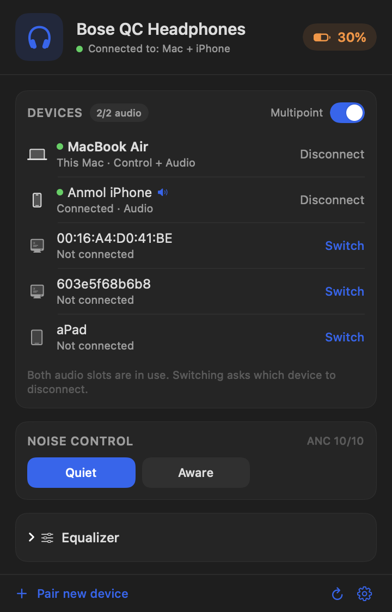
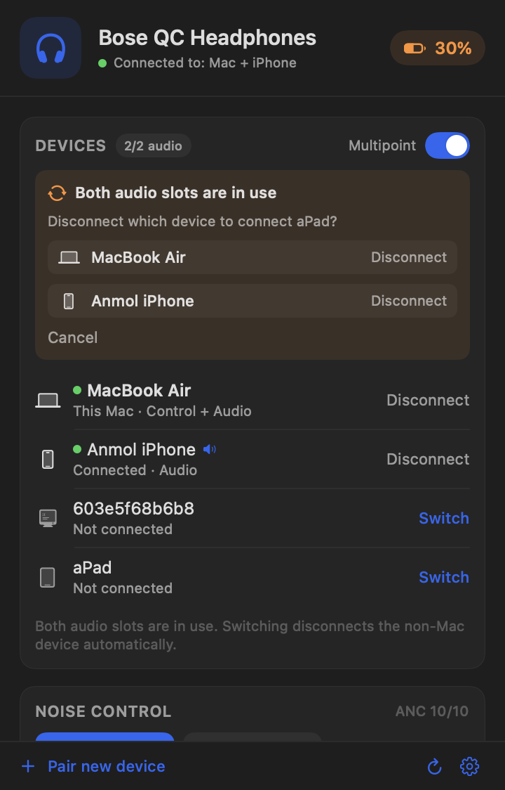
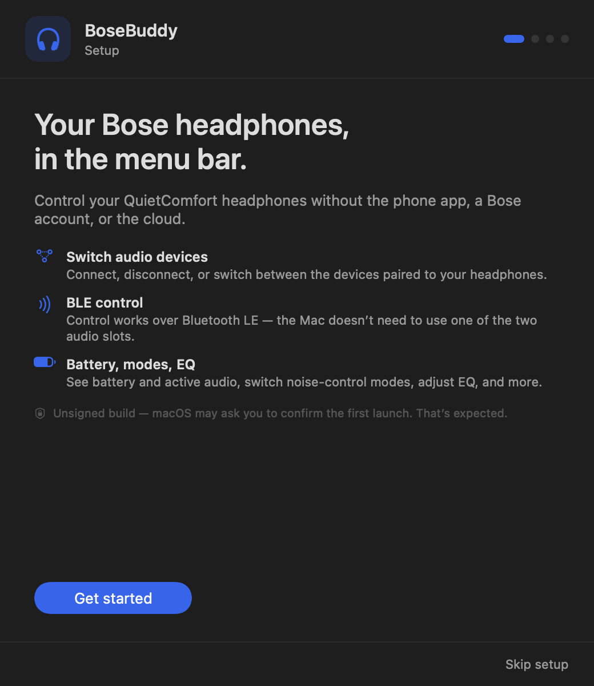

Switch paired devices
See the devices paired to the headphones and connect, disconnect, or switch them from the menu bar.
Switch the devices connected to your QuietComfort headphones, bring the Mac’s audio online, and check battery, modes, and EQ — without reaching for the phone app.
Apple Silicon & Intel · No account · No cloud

What it does
Bose only offers device management in its phone app. BoseBuddy puts the same controls in your menu bar.
See the devices paired to the headphones and connect, disconnect, or switch them from the menu bar.
Connect audio brings this Mac online as an audio device without dropping the other connection.
Battery and charging state, Quiet / Aware modes, multipoint, and a 3-band EQ where the headphones support it.
No account, no cloud, no telemetry. Everything happens between the Mac and the headphones over Bluetooth.
A tiny status item with the battery percentage. Click it to manage everything; there is no dock icon or window.
When both audio slots are full, the non-Mac device is dropped by default so the Mac keeps its connection. A chooser is optional.
Screenshots


Install
Grab the latest release. It’s a universal build for Apple Silicon and Intel.
The build is ad-hoc signed, not notarized. On first launch, right-click BoseBuddy → Open, or use System Settings → Privacy & Security → Open Anyway.
Connect the headphones to this Mac from the headphones’ Bluetooth button or the Bose app, then open BoseBuddy. It attaches to that existing connection.
xattr -dr com.apple.quarantine /Applications/BoseBuddy.app.
Compatibility
Tested on Bose QC Headphones. The same BMAP protocol family drives QC Ultra, QC45, and NC700, so the core features should work.
FAQ
Yes. BoseBuddy uses the Mac’s existing Bluetooth connection, so the Mac must be one of the two connected devices. It attaches to that connection and never starts a new one just because you opened it.
Core features are expected to work because the QC Ultra uses the same protocol family. Model-specific extras like Immersive Audio aren’t exposed. If it doesn’t connect, the log at ~/Library/Logs/BoseBuddy.log will help.
The app is ad-hoc signed, not notarized. There’s no Apple Developer ID behind it. Right-click → Open once, or use System Settings → Privacy & Security → Open Anyway. The source is on GitHub.
No. No networking, accounts, telemetry, or cloud. The only file it writes is a capped local log at ~/Library/Logs/BoseBuddy.log.
Yes, MIT licensed. If it’s useful, there’s an optional tip jar — you can always choose $0 and just download.
Support
BoseBuddy is free and open source. If it saves you a trip to the phone app, you can buy me a coffee — completely optional.